Pengantar R, Pengolahan Data, dan Visualisasi
Selamat Datang!
Pendahuluan
Tentang workshop ini:
Format live-coding; silakan ikuti bersama!
Tujuan workshop: memberikan dasar-dasar yang cukup (setidaknya sampai ChatGPT tidak bisa membohongi Anda dengan mudah) dan kepercayaan diri untuk mengeksplorasi R secara mandiri.
Jangan takut untuk bertanya! Kita semua di sini untuk belajar.
Garis Besar Workshop
Workshop ini disusun mengikuti alur kerja berikut saat bekerja dengan data 
Garis Besar Seri Workshop
- Impor data ke R, yaitu mengambil data (dari file, API, dll.) dan memuatnya ke dalam dataframe di R
- Rapikan (Tidy) data yang sudah diimpor.
- Tidy = menyimpan dalam bentuk konsisten yang sesuai dengan semantik dataset.
- Tidy data = setiap kolom adalah variabel, setiap baris adalah observasi
- Setelah data rapi, kita dapat mentransformasi. Transformasi meliputi:
- mempersempit observasi yang diminati (seperti semua orang di satu kota atau semua data tahun lalu)
- membuat variabel baru dari variabel yang ada (seperti menghitung kecepatan dari jarak dan waktu)
- menghitung statistik ringkasan (seperti jumlah atau rata-rata).
- Setelah memiliki data rapi dengan informasi yang dibutuhkan, kita dapat memvisualisasikan dan memodelkan.
- Mengkomunikasikan hasilnya. Tidak peduli sebaik apa model dan visualisasi Anda memahami data, hasilnya perlu dikomunikasikan kepada orang lain.
Rencana Hari Ini
Bagian 1: Dasar-Dasar R
- R dan RStudio, Objek, Nilai, dan Tipe data
- Fungsi dan paket
- Struktur data (vektor, faktor, dataframe)
Bagian 2: Pengolahan Data dengan Tidyverse
- Import data CSV
- Data wrangling: filter, select, mutate, group_by, summarize
- Operator pipe (
|>)
Bagian 3: Visualisasi dan Statistik Deskriptif
- Statistik deskriptif univariat dan bivariat
- Visualisasi dengan ggplot2
- Faceting dan korelasi
Apa itu R? Apa itu RStudio?
R: R adalah bahasa pemrograman open-source yang dikembangkan untuk analisis statistik dan visualisasi. Komunitas berbagi kode R dan membuat shortcut.
RStudio: Lingkungan perangkat lunak R yaitu RStudio adalah tempat kita berinteraksi lebih mudah dengan bahasa dan skrip R.
Anda perlu menginstal keduanya untuk workshop ini. Kunjungi https://posit.co/download/rstudio-desktop untuk mengunduh dan menginstal keduanya jika belum. Ingat: Instal R terlebih dahulu baru kemudian RStudio.
Lihat situs web workshop untuk panduan langkah demi langkah.
Tur RStudio
Pertama, kita perlu familiar dengan antarmuka RStudio. Kita akan menggunakan RStudio untuk menulis kode, menavigasi file di komputer, memeriksa variabel yang kita buat, dan memvisualisasikan plot yang kita hasilkan.

Tampilan R Studio
Sebelum Coding
- Mengatur direktori kerja (working directory)
- Membuat proyek
- Membuat folder dan file
Mengatur Direktori Kerja (Working Directory)
Working directory -> tempat R mencari file (skrip, data, dll.). Tetap terorganisir dengan semua file dan folder terkait proyek tersimpan di satu tempat.
Secara default, akan berada di Desktop Anda.
Praktik terbaik adalah menggunakan R Project untuk mengorganisir file dan data Anda.
Saat menggunakan R Project, working directory = folder proyek.
Membuat Proyek untuk Workshop Ini
Buka
File>New project. PilihNew directory, laluNew projectMasukkan
workshop-isei-regresi-semsebagai nama folder baru dan pilih lokasi penyimpanan, misalnyaDesktopatauDocuments. Ini akan menjadi working directory Anda selama workshop!
Membuat Folder di Dalam Direktori Kerja
data- kita akan menyimpan data mentah di sini. Praktik terbaik adalah menjaga data di sini tidak diubah.data-output- jika perlu memodifikasi data mentah, simpan versi yang dimodifikasi di sini.fig-output- kita akan menyimpan semua grafik yang dibuat di sini!
Catatan
Jangan:
Jangan taruh proyek R di dalam folder OneDrive karena kadang menyebabkan masalah.
Nama folder/file harus menghindari spasi, simbol, dan karakter khusus. Gunakan huruf kecil semua.
Lakukan:
- Jika working directory tidak sesuai, ubah di antarmuka RStudio dengan menavigasi ke lokasi yang benar di file browser, klik ikon gear biru “More”, dan pilih “Set As Working Directory”.
Mari Mulai Coding!
Buat skrip R baru - File > New File > R script.
RStudio memungkinkan Anda mengeksekusi perintah langsung dari editor skrip dengan shortcut Ctrl + Enter (di Mac, Cmd + Return).
Anda bisa mengetik perintah langsung di konsol dan tekan Enter untuk mengeksekusi, tetapi perintah tersebut akan hilang saat sesi ditutup. Lebih baik mengetik perintah di editor skrip dan menyimpan skrip tersebut.
Catatan: RStudio tidak menyimpan otomatis, jadi ingat untuk menyimpan secara berkala!
Objek dan Nilai di R
In this line of code:
"Singapore"adalah sebuah nilai (value). Ini bisa berupa tipe data karakter, numerik, atau boolean. (lebih lanjut segera)country_nameadalah objek tempat kita menyimpan nilai ini. Ini agar kita bisa menyimpan nilai untuk digunakan nanti.<-adalah operator penugasan (assignment) untuk menetapkan nilai ke objek.- Anda juga bisa menggunakan
=, tetapi umumnya di R,<-adalah konvensi. - Shortcut keyboard:
Alt+-di Windows (Option+-di Mac)
- Anda juga bisa menggunakan
Objek dan Nilai di R
In this line of code:
"Singapore"adalah sebuah nilai (value). Ini bisa berupa tipe data karakter, numerik, atau boolean.country_nameadalah objek tempat kita menyimpan nilai ini.<-adalah operator penugasan untuk menetapkan nilai ke objek.- Anda juga bisa menggunakan
=, tetapi umumnya di R,<-adalah konvensi. - Shortcut keyboard:
Alt+-di Windows (Option+-di Mac)
- Anda juga bisa menggunakan
Aturan penamaan objek:
Tidak boleh dimulai dengan angka
Peka huruf besar/kecil (case sensitive)
Tidak boleh ada spasi
Beberapa kata dicadangkan (reserved words)
Penyegaran: Tipe Data Kuantitatif
Data Non-Kontinu
Nominal/Kategorikal: Data non-urut, non-numerik, digunakan untuk merepresentasikan atribut kualitatif.
- Contoh: kebangsaan, kelurahan, status pekerjaan
Ordinal: Data non-numerik berurutan.
- Contoh: Peringkat Nutri-grade, frekuensi olahraga (harian, mingguan, dua mingguan)
Diskrit: Data numerik yang hanya bisa mengambil nilai tertentu (biasanya bilangan bulat)
- Contoh: Ukuran sepatu, ukuran pakaian
Biner: Data nominal dengan hanya dua kemungkinan hasil
- Contoh: lulus/gagal, ya/tidak, selamat/tidak selamat
Data Kontinu
Interval: Data numerik yang bisa mengambil nilai apa pun dalam rentang tertentu. Tidak memiliki “nol sejati”.
- Contoh: Skala Celsius. Suhu 0°C tidak berarti tidak ada panas.
Rasio: Data numerik yang bisa mengambil nilai apa pun dalam rentang tertentu. Memiliki “nol sejati”.
- Contoh: Pendapatan tahunan. Pendapatan 0 berarti tidak ada pendapatan.
Tipe Data di R
Empat tipe data dasar adalah karakter (characters), numerik (numeric), boolean, dan integer. Mari lihat contohnya:
Untuk menyertakan komentar dalam kode, gunakan karakter #.
Apa pun di sebelah kanan tanda # sampai akhir baris dianggap sebagai komentar dan diabaikan oleh R saat eksekusi.
Praktik yang baik untuk membuat catatan dan menjelaskan kode.
Memeriksa Tipe Data Variabel
Anda bisa menggunakan str atau typeof untuk memeriksa tipe data objek R.
str mengembalikan tipe data dan nilainya.
Operasi Aritmatika di R
Anda bisa melakukan operasi aritmatika di R. Misalnya, mari hitung rata-rata skor kepuasan:
Operasi Boolean di R - Pernyataan TRUE/FALSE Sederhana
Operasi boolean di R berguna untuk memfilter data survei. Sebelum itu, mari lihat bagaimana R mengevaluasi pernyataan TRUE/FALSE sederhana
Apakah life_satisfaction lebih besar dari 8?
Apakah negara tersebut Singapura?
Apakah negara tersebut BUKAN Singapura?
Operasi Boolean di R - Operator AND
Kadang kita memiliki beberapa pernyataan untuk dievaluasi. Di sinilah Operator Boolean berguna.
Operasi AND (kedua kondisi harus TRUE). Di R, direpresentasikan dengan ampersand &
Apakah negara Selandia Baru DAN apakah kepuasan hidup lebih dari 8?
country_code == "NZL" adalah FALSE sementara life_satisfaction > 8 adalah TRUE
Seluruh pernyataan akan mengembalikan FALSE karena tidak semua kondisi TRUE.
Operasi Boolean di R - Operator OR
Operasi OR (setidaknya satu kondisi harus TRUE). Di R, direpresentasikan dengan simbol pipe |
Apakah negara Selandia Baru ATAU apakah kepuasan hidup lebih dari 8?
Selama satu kondisi terpenuhi, ini akan TRUE.
Fungsi di R
Fungsi seperti resep dalam memasak.
Fungsi mengambil bahan (input) dan menggunakan instruksi untuk menghasilkan hasil (output).
Di R, fungsi adalah kumpulan instruksi tertulis yang melakukan tugas tertentu. Nama fungsi selalu diikuti tanda kurung bulat
()
Contoh: fungsi round() di R akan membulatkan angka.
round()adalah “resep”, sedangkan3.1415926adalah “bahan”
Menyimpan hasil ke objek:
Fungsi dengan Argumen di R
Mengikuti analogi resep, argumen adalah bahan yang Anda berikan ke fungsi. nama_fungsi(argumen/parameter)
Beberapa argumen wajib, yang lain opsional (memiliki nilai default).
Setiap argumen memberi tahu fungsi apa yang harus digunakan atau bagaimana melakukan tugas.
Contoh: Bayangkan pesanan bubble tea sebagai fungsi. Argumen/bahan yang mungkin:
Teh - bahan wajib
Susu - opsional, default-nya disertakan
Topping - opsional, pilihan default “mutiara”
In R:
3.1415926adalah argumen wajib (jika tidak diberikan, fungsi tidak akan berjalan)digitsadalah argumen opsional yang menentukan berapa desimal yang dibulatkan (default-nya 0)
Bagaimana Mengetahui Lebih Lanjut Tentang Fungsi?
Anda bisa memanggil halaman bantuan / vignette di R dengan menambahkan ? di depan nama fungsi.
Misalnya, jika ingin mengetahui lebih lanjut tentang fungsi round, jalankan ?round di konsol R (panel kiri bawah)
Struktur Data di R
Kita akan mulai dengan mengeksplorasi 3 tipe dasar struktur data di R:
Vektor - dapat menampung beberapa nilai dalam satu variabel/objek.
Faktor - Struktur data khusus di R untuk menangani variabel kategorikal.
Data frame - Struktur data standar untuk data tabular di R, dan yang kita gunakan untuk pemrosesan, plotting, dan statistik.
Tipe lain (tidak dibahas dalam workshop ini):
Lists: Tipe vektor rekursif
Matrices: Kumpulan elemen dengan tipe sama dalam baris dan kolom
Struktur Data di R - Visualisasi
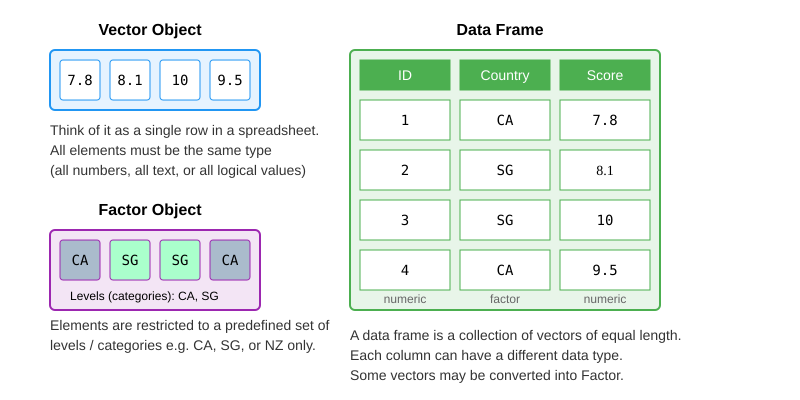
Struktur Data di R: Vektor
Bayangkan vektor sebagai kolom dalam dataset. Ini adalah struktur data paling umum dan dasar di R. (semacam “pekerja keras” R!)
Vektor hanya bisa berisi 1 tipe data.
Vektor dapat dibuat dengan fungsi c().
Dapat menambah, menghapus, atau mengubah nilai dalam vektor.
Periksa vektor: typeof(), str(), length()
Manipulasi Vektor: Mengambil dan Memperbarui Item
Mengambil negara pertama dalam vektor
Mengambil tiga skor kepuasan pertama
Mengambil skor kepuasan pertama dan ketiga
Memperbarui skor kepuasan pertama
Mengapa Tanda Kurung Siku dan Bukan Kurung Bulat?
Tanda kurung bulat () untuk menjalankan fungsi, seperti menggunakan alat: mean() atau sum().
Tanda kurung siku [] untuk mengakses bagian tertentu dari data Anda, di mana kita memasukkan nomor indeks elemen yang diinginkan.
Manipulasi Vektor: Mengambil Item Berdasarkan Kriteria
Mari temukan skor kepuasan tinggi (di atas 7)!
Kode di bawah akan membuat vektor boolean bernama
criteriayang mencatat apakah setiap item disatisfaction_scoresmemenuhi kondisi kita.Kondisinya adalah “nilai harus > 7”. Jika item 1 memenuhi kondisi, maka item 1 ‘ditandai’ sebagai
TRUE. Jika tidak, akanFALSE
[1] FALSE FALSE TRUE FALSE TRUE- Baris kode ini menerapkan vektor boolean
criteriakesatisfaction_scores, dan hanya mengambil item yang memenuhi kondisi.
Manipulasi Vektor: Menangani Nilai NA
Nilai NA menunjukkan nilai null, atau ketiadaan nilai (0 masih merupakan nilai!)
Fungsi ringkasan seperti
meanmemerlukan argumenna.rmtentang bagaimana penanganannya.
Data survei sering mengandung nilai yang hilang (NA):
Struktur Data di R: Dataframe
Struktur data standar untuk data tabular di R, dan yang kita gunakan untuk pemrosesan data, plotting, dan statistik.
Mirip dengan spreadsheet - kumpulan persegi panjang dari variabel (kolom) dan observasi (baris)!
Anda bisa membuatnya secara manual seperti ini: (meskipun lebih umum Anda menggunakan ini untuk memuat data dari sumber eksternal)
country life_satisfaction employment
1 SGP 8 Full time
2 CAN 7 Student
3 NZL 9 Part time
4 SGP 6 Retired
5 CAN 8 Full timeMengunduh Dataset World Values Survey (WVS)
Untuk workshop ini, kita akan mencoba memuat dataset dari file ke dalam dataframe!
Buka situs web workshop dan kunjungi tab ‘Dataset’ untuk mengunduh file data dan informasi tentang data WVS ini
Unduh CSV ini dan simpan di folder data di proyek R Anda!
Paket di R (untuk fungsionalitas tambahan)
Paket adalah kumpulan fungsi, dataset R, dll. Paket memperluas fungsionalitas R.
- (Analogi terdekat: seperti add-on browser)
Paket populer:
tidyverse,caret,shiny, dll.Instalasi (cukup sekali saja):
install.packages("nama paket")Memuat paket (perlu dijalankan setiap restart RStudio):
library(nama paket)- mari coba muattidyversekarena kita akan menggunakan ini untuk memuat CSV ke dataframe!- Tidyverse adalah kumpulan paket terkenal yang memfasilitasi proyek data science. Termasuk paket untuk manipulasi data, visualisasi, impor, dan tidying.
Memuat Dataset WVS
Mari muat dataset World Values Survey menggunakan fungsi read_excel dari paket readxl.
Sebelum menggunakan read_excel, instal dan muat paket readxl dan tidyverse. Instal paket hanya sekali dan perlu memuat paket di setiap sesi sebelum menggunakannya.
# A tibble: 6 × 16
negara id_responden pentingnya_keluarga pentingnya_teman
<chr> <dbl> <dbl> <dbl>
1 Kanada 124070003 1 1
2 Kanada 124070004 1 1
3 Kanada 124070005 2 2
4 Kanada 124070006 1 2
5 Kanada 124070008 1 2
6 Kanada 124070009 1 2
# ℹ 12 more variables: pentingnya_waktu_luang <dbl>,
# pentingnya_pekerjaan <dbl>, kebebasan_memilih <dbl>, kepuasan_hidup <dbl>,
# kepuasan_finansial <dbl>, religiusitas <dbl>, skala_politik <dbl>,
# jenis_kelamin <chr>, tahun_lahir <dbl>, usia <dbl>,
# status_pernikahan <chr>, status_pekerjaan <chr>Pastikan file xlsx tersimpan di folder data Anda! (Tidak ada auto save)
Mengeksplorasi Dataset WVS
Manipulasi Dasar Dataframe: Mengambil Nilai
Beberapa fungsi dasar dataframe sebelum kita lanjut ke data wrangling:
- 1
- mengambil kolom berdasarkan nama kolom (dikembalikan sebagai tibble/dataframe)
- 2
- cara lain mengambil kolom berdasarkan nama (dikembalikan sebagai vektor)
- 3
- mengambil kolom berdasarkan indeks
- 4
- mendapatkan sel di koordinat baris, kolom ini
- 5
- mendapatkan seluruh baris
Struktur Data di R: Faktor
Struktur data khusus di R untuk menangani data kategorikal.
Terlihat (dan sering berperilaku) seperti vektor karakter tetapi sebenarnya diperlakukan sebagai vektor integer.
Hanya dapat berisi kumpulan nilai yang telah ditentukan, dikenal sebagai
levels. R selalu mengurutkan levels secara alfabetDapat berurutan (ordinal) atau tidak berurutan (nominal).
Mungkin terlihat seperti vektor biasa pada pandangan pertama, jadi gunakan
str()untuk memeriksa.Aplikasi paling umum: saat kita ingin menentukan kolom di dataframe sebagai kolom kategori
Mengonversi Kolom Dataframe ke Faktor - Tidak Berurutan
Dalam contoh kita, country seharusnya menjadi faktor!
Karena tidak ada urutan bawaan dalam nama negara, kategori kita akan tidak berurutan:
[1] "Kanada" "Selandia Baru" "Singapura" Jika kita periksa strukturnya, kolom country seharusnya menjadi faktor bukan karakter sekarang:
Mengonversi Kolom Dataframe ke Faktor - Berurutan
Sebagai contoh faktor berurutan, misalkan kita ingin mengurutkan status_pekerjaan dari yang paling tidak aktif ke paling aktif secara ekonomi.
[1] "Tidak bekerja" "Pelajar/Mahasiswa" "Ibu rumah tangga"
[4] "Pensiunan" "Paruh waktu" "Penuh waktu"
[7] "Wiraswasta" "Lainnya" Ord.factor w/ 8 levels "Tidak bekerja"<..: 4 4 5 6 6 6 7 1 7 6 ...Trouble Shooting
Types of messages
Error: Fatal error in your code that prevented it from being run through successfully. Need to fix it for the code to run.
Warning: Non-fatal errors (don’t stop the code from running, but this is a potential problem that you should know about).
Message: Helpful information about the code you just ran(can usually ignore these messages)
Trouble Shooting
Check. Did you…
Set your working directory?
Check for missing commas (,), parentheses ()?
Check your spelling?
Spelling : Punctuation <- meaan(c(1, 2, 3, 4)) or print(Punctuatioon)
Punctuation : sum(10?20) or Punctuation <- sum(c(10, 20)))
Capitalization : sUm(c(5, 10, 15))
In text indicators : X + Y or #taking notes or “name” vs name
Rekap
R & RStudio: R adalah bahasa pemrograman untuk komputasi statistik dan grafis, sementara RStudio adalah lingkungan yang memudahkan menulis, menjalankan, dan mengelola kode R.
Working Directory: Folder di komputer di mana R membaca dan menyimpan file.
Tipe Data: Jenis nilai yang dapat disimpan objek, seperti numerik, karakter, dan Boolean.
Struktur Data: Struktur data mengorganisir dan menyimpan data di R, seperti vektor, faktor, dan data frame.
Fungsi: Kode yang dapat digunakan kembali yang melakukan tugas tertentu. Bisa memanggil fungsi dengan argumen.
Paket: Kumpulan fungsi dan data untuk melakukan tugas. Perlu menginstal dan memuat paket.
Bagian 2: Pengolahan Data dengan Tidyverse
Garis Besar
- Memuat data ke dalam lingkungan RStudio
- Data wrangling dengan
dplyrdantidyr(bagian dari pakettidyverse)
Alat yang Akan Kita Gunakan: dplyr dan tidyr
Paket dari
tidyverse. (klik di sini untuk ke halaman utama tidyverse)Posit telah membuat cheatsheet:
Fungsi yang akan sering digunakan:
drop_na()- menghapus baris dengan nilai kosong (null)select()- untuk memilih kolom dari dataframefilter()- untuk menyaring baris berdasarkan kriteriamutate()- untuk membuat kolom baru atau mengedit yang sudah adaif_else()dancase_when()- membuat/mengedit kolom berdasarkan beberapa kriteriagroup_by()dansummarize()- mengelompokkan data dan merangkum setiap kelompok
Mengapa Menggunakan Tidyverse?
- Kode terlihat lebih mirip bahasa Inggris sehingga lebih intuitif bagi pemula
- Tidyverse mengikuti pola sintaks yang konsisten
- Pesan error yang lebih jelas dan membantu
Penyegaran: Memuat dari CSV ke Dataframe
Rows: 7,087
Columns: 16
$ negara <chr> "Kanada", "Kanada", "Kanada", "Kanada", "Kanada…
$ id_responden <dbl> 124070003, 124070004, 124070005, 124070006, 124…
$ pentingnya_keluarga <dbl> 1, 1, 2, 1, 1, 1, 1, 1, 1, 1, 1, 1, 1, 1, 1, 2,…
$ pentingnya_teman <dbl> 1, 1, 2, 2, 2, 2, 1, 2, 1, 3, 1, 2, 1, 1, 1, 3,…
$ pentingnya_waktu_luang <dbl> 1, 2, 2, 2, 2, 2, 1, 2, 1, 2, 1, 1, 2, 2, 1, 2,…
$ pentingnya_pekerjaan <dbl> 1, 1, 2, 2, 2, 1, 1, 2, 1, 2, 1, 2, 4, 1, 3, 3,…
$ kebebasan_memilih <dbl> 7, 5, 8, 4, 7, 6, 9, 7, 8, 6, 8, 10, 8, 9, 7, 6…
$ kepuasan_hidup <dbl> 5, 8, 9, 7, 1, 7, 9, 6, 7, 6, 7, 10, 8, 10, 6, …
$ kepuasan_finansial <dbl> 8, 2, 8, 8, 9, 8, 9, 5, 6, 9, 5, 7, 9, 9, 7, 8,…
$ religiusitas <dbl> 9, 10, 3, 8, 3, 1, 3, 7, 5, 8, 5, 3, 3, 4, 3, 7…
$ skala_politik <dbl> 10, 5, 2, 8, 6, 6, 7, 5, 6, 4, 5, 4, 1, 7, 2, 8…
$ jenis_kelamin <chr> "Perempuan", "Laki-laki", "Perempuan", "Laki-la…
$ tahun_lahir <dbl> 1944, 1951, 1984, 1975, 1988, 1982, 1981, 1985,…
$ usia <dbl> 76, 69, 35, 45, 32, 38, 38, 34, 65, 31, 27, 33,…
$ status_pernikahan <chr> "Pisah", "Menikah", "Kohabitasi", "Menikah", "B…
$ status_pekerjaan <chr> "Pensiunan", "Pensiunan", "Paruh waktu", "Penuh…Operator Pipe ( |> )
- Operator pipe (|>) memungkinkan kita merangkai beberapa operasi tanpa membuat dataframe perantara.
- Pintasan keyboard:
Ctrl+Shift+Mdi Windows,Cmd+Shift+Mdi Mac
Skenario: Data Wrangling dengan Data WVS
Skenario: Kita adalah asisten peneliti yang menganalisis pola nilai dan kepuasan di berbagai negara.
Langkah-langkah:
- Hapus semua baris dengan nilai kosong (NA) menggunakan
drop_na() - Periksa duplikasi data dengan
distinct() - Pilih kolom yang relevan dengan
select() - Saring responden berusia 18+ dengan
filter() - Buat kelompok usia dengan
mutate()dancase_when() - Simpan hasil ke CSV baru
Langkah #1: Hapus Nilai Kosong
Langkah #2: Periksa Duplikasi
Langkah #3: Pilih Kolom yang Relevan
Rows: 6,403
Columns: 13
$ id_responden <dbl> 124070003, 124070004, 124070005, 124070006, 12407…
$ negara <chr> "Kanada", "Kanada", "Kanada", "Kanada", "Kanada",…
$ jenis_kelamin <chr> "Perempuan", "Laki-laki", "Perempuan", "Laki-laki…
$ tahun_lahir <dbl> 1944, 1951, 1984, 1975, 1988, 1982, 1981, 1985, 1…
$ usia <dbl> 76, 69, 35, 45, 32, 38, 38, 34, 65, 31, 27, 33, 6…
$ kepuasan_hidup <dbl> 5, 8, 9, 7, 1, 7, 9, 6, 7, 6, 7, 10, 8, 10, 6, 7,…
$ pentingnya_pekerjaan <dbl> 1, 1, 2, 2, 2, 1, 1, 2, 1, 2, 1, 2, 4, 1, 3, 3, 4…
$ kepuasan_finansial <dbl> 8, 2, 8, 8, 9, 8, 9, 5, 6, 9, 5, 7, 9, 9, 7, 8, 9…
$ kebebasan_memilih <dbl> 7, 5, 8, 4, 7, 6, 9, 7, 8, 6, 8, 10, 8, 9, 7, 6, …
$ religiusitas <dbl> 9, 10, 3, 8, 3, 1, 3, 7, 5, 8, 5, 3, 3, 4, 3, 7, …
$ skala_politik <dbl> 10, 5, 2, 8, 6, 6, 7, 5, 6, 4, 5, 4, 1, 7, 2, 8, …
$ status_pernikahan <chr> "Pisah", "Menikah", "Kohabitasi", "Menikah", "Ber…
$ status_pekerjaan <chr> "Pensiunan", "Pensiunan", "Paruh waktu", "Penuh w…Langkah #4: Filter dan Urutkan
# A tibble: 6 × 13
id_responden negara jenis_kelamin tahun_lahir usia kepuasan_hidup
<dbl> <chr> <chr> <dbl> <dbl> <dbl>
1 124071434 Kanada Laki-laki 1927 93 7
2 554070524 Selandia Baru Perempuan 1928 91 5
3 702070265 Singapura Laki-laki 1930 90 8
4 124071321 Kanada Perempuan 1931 89 6
5 124073566 Kanada Perempuan 1930 89 6
6 124074356 Kanada Laki-laki 1931 89 8
# ℹ 7 more variables: pentingnya_pekerjaan <dbl>, kepuasan_finansial <dbl>,
# kebebasan_memilih <dbl>, religiusitas <dbl>, skala_politik <dbl>,
# status_pernikahan <chr>, status_pekerjaan <chr>Langkah #5: Buat Variabel Baru dengan mutate()
Buat kelompok usia untuk setiap generasi:
Checkpoint: Menyimpan Hasil ke CSV
Periksa folder data-output untuk memastikan file CSV sudah dibuat!
Konversi ke Factor
tibble [6,403 × 14] (S3: tbl_df/tbl/data.frame)
$ id_responden : num [1:6403] 1.24e+08 5.54e+08 7.02e+08 1.24e+08 1.24e+08 ...
$ negara : Factor w/ 3 levels "Kanada","Selandia Baru",..: 1 2 3 1 1 1 2 1 1 2 ...
$ jenis_kelamin : Factor w/ 2 levels "Laki-laki","Perempuan": 1 2 1 2 2 1 2 1 2 1 ...
$ tahun_lahir : num [1:6403] 1927 1928 1930 1931 1930 ...
$ usia : num [1:6403] 93 91 90 89 89 89 89 88 88 88 ...
$ kepuasan_hidup : num [1:6403] 7 5 8 6 6 8 9 8 8 10 ...
$ pentingnya_pekerjaan: num [1:6403] 1 4 1 3 4 4 2 1 4 2 ...
$ kepuasan_finansial : num [1:6403] 7 5 9 9 8 8 10 10 5 10 ...
$ kebebasan_memilih : num [1:6403] 6 6 10 8 4 7 7 8 8 10 ...
$ religiusitas : num [1:6403] 3 6 9 5 4 8 6 9 6 10 ...
$ skala_politik : num [1:6403] 5 3 3 2 5 5 8 10 5 5 ...
$ status_pernikahan : Factor w/ 6 levels "Janda/Duda","Lajang",..: 1 1 1 1 2 3 1 1 1 1 ...
$ status_pekerjaan : Factor w/ 8 levels "Paruh waktu",..: 1 2 2 2 2 2 2 2 2 2 ...
$ kelompok_usia : chr [1:6403] "61+" "61+" "61+" "61+" ...Analisis Deskriptif: group_by + summarize
Analisis Deskriptif: Grup Kepuasan
Pivot: Reshape Data
# A tibble: 3 × 5
negara `61+` `45-60` `29-44` `18-28`
<fct> <dbl> <dbl> <dbl> <dbl>
1 Kanada 7.55 6.92 6.99 6.60
2 Selandia Baru 7.96 7.38 7.32 6.70
3 Singapura 7.17 7.05 7.09 6.85Latihan Tidyverse
Muat file
data/regresi/wvs2.xlsx, gabungkan denganwvs_datamenggunakanbind_rows(). Saring hanya responden dari Indonesia, hitung rata-ratakepuasan_hidupperjenis_kelamin.
Jawaban
# A tibble: 2 × 3
jenis_kelamin rata_kepuasan n
<chr> <dbl> <int>
1 Laki-laki 7.38 1446
2 Perempuan 7.69 1754Bagian 3: Visualisasi dan Statistik Deskriptif
Statistik Deskriptif: Ukuran Pemusatan
Statistik Deskriptif: Ukuran Penyebaran
Pengantar ggplot2
ggplot2adalah sistem visualisasi data berbasis “Grammar of Graphics”- Setiap plot terdiri dari layers: data, aesthetic mapping, geom, dsb.
Komponen utama:
ggplot(): inisialisasi plot dengan dataaes(): pemetaan variabel ke estetika visual (x, y, warna, dll.)geom_*(): tipe geometri plot (titik, garis, bar, dll.)labs(): label dan judul
Histogram: Distribusi Satu Variabel
Histogram: Distribusi Satu Variabel
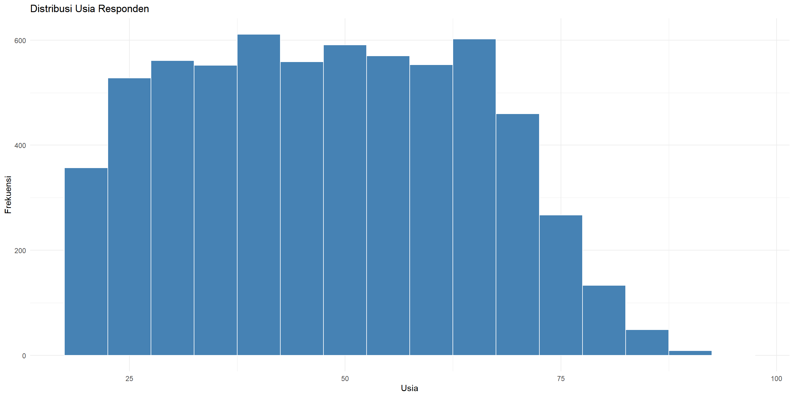
Boxplot: Distribusi per Grup
Boxplot: Distribusi per Grup
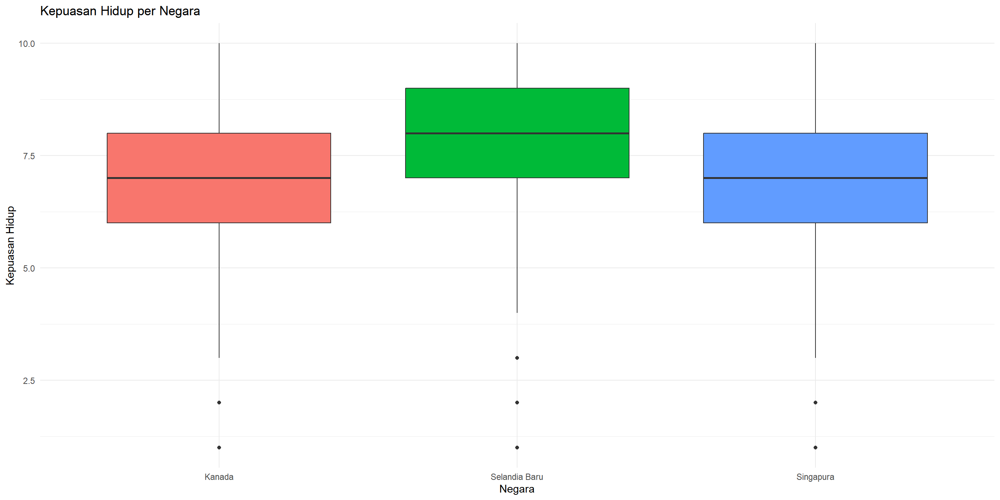
Bar Chart: Frekuensi Kategori
Bar Chart: Frekuensi Kategori
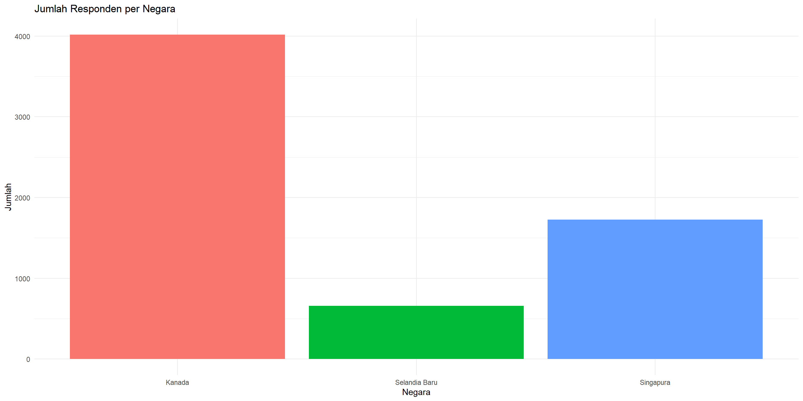
Pie Chart
Pie Chart
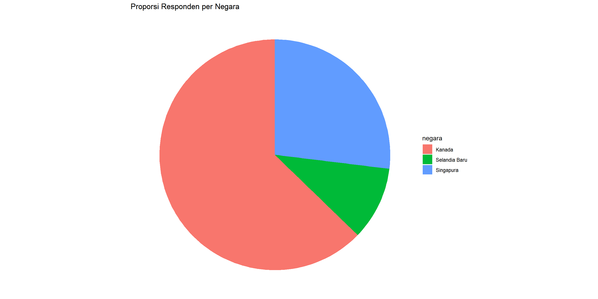
Scatter Plot: Hubungan Dua Variabel
Scatter Plot: Hubungan Dua Variabel
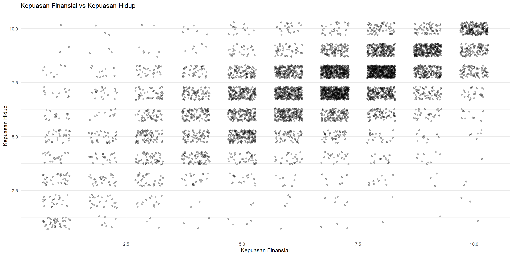
Scatter Plot + Regresi Line
ggplot(wvs_cleaned, aes(x = kepuasan_finansial, y = kepuasan_hidup)) +
geom_jitter(alpha = 0.2, width = 0.3, height = 0.3) +
geom_smooth(method = "lm", color = "red") +
labs(title = "Kepuasan Finansial vs Kepuasan Hidup (dengan garis regresi)",
x = "Kepuasan Finansial", y = "Kepuasan Hidup") +
theme_minimal()Scatter Plot + Regresi Line
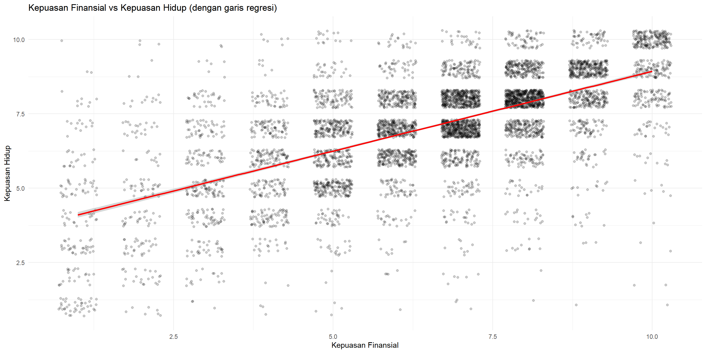
Latihan Visualisasi 1
Buat histogram
kepuasan_finansialdenganbinwidth = 1.
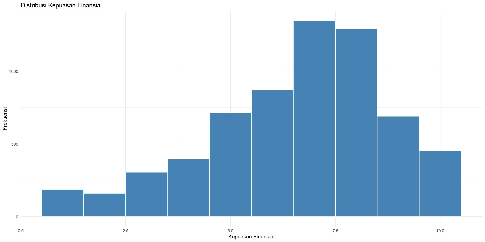
Tabulasi Silang (Cross Tabulation)
Kanada Selandia Baru Singapura
18-28 712 27 246
29-44 1232 119 511
45-60 1061 222 550
61+ 1013 292 418Stacked Bar Chart
Stacked Bar Chart
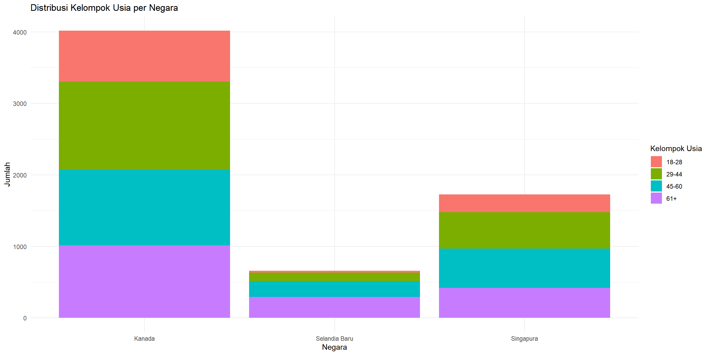
Grouped Bar Chart
Grouped Bar Chart
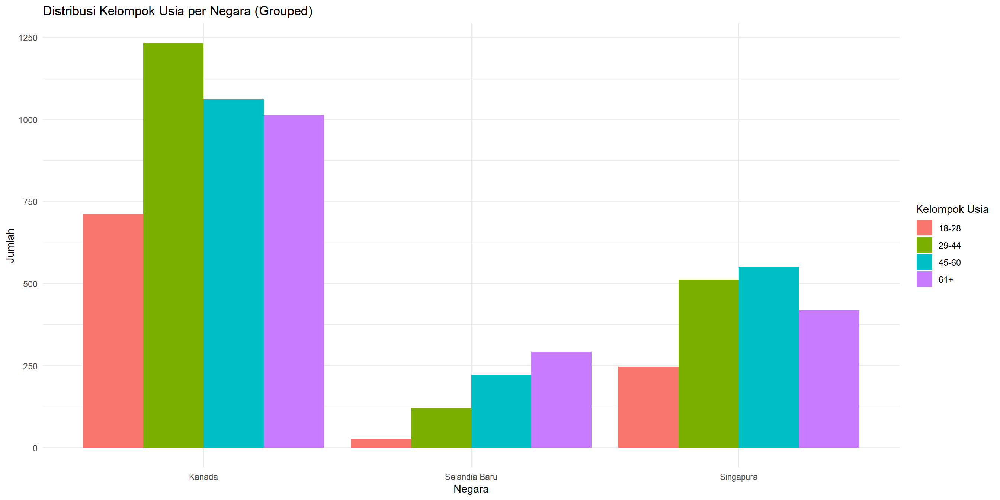
Proportional Bar Chart
Proportional Bar Chart
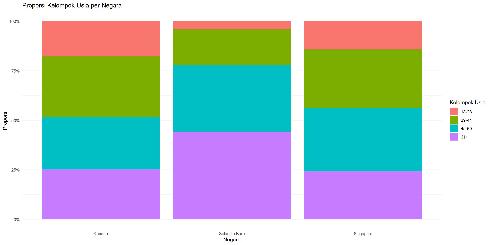
Korelasi
Faceting: Plot per Grup
ggplot(wvs_cleaned, aes(x = kepuasan_finansial, y = kepuasan_hidup)) +
geom_jitter(alpha = 0.2, width = 0.3, height = 0.3) +
geom_smooth(method = "lm", color = "red") +
facet_wrap(~ negara) +
labs(title = "Kepuasan Finansial vs Kepuasan Hidup per Negara",
x = "Kepuasan Finansial", y = "Kepuasan Hidup") +
theme_minimal()Faceting: Plot per Grup
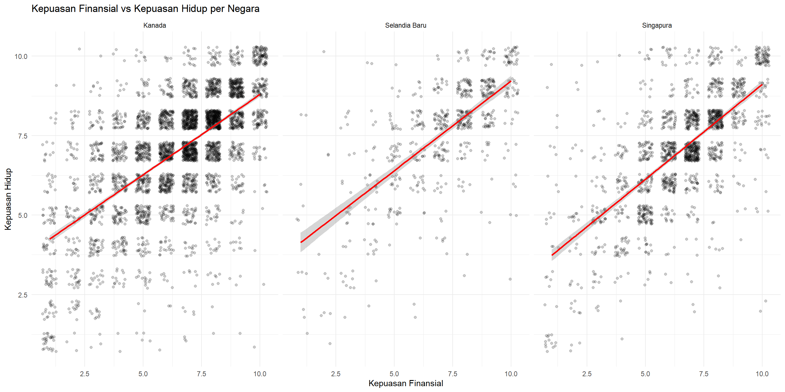
Matriks Korelasi
Matriks Korelasi
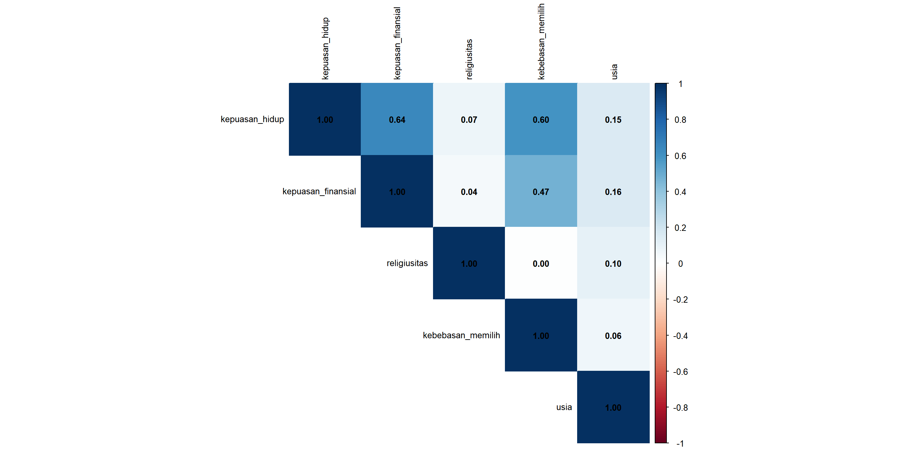
Menyimpan Plot: ggsave()
Latihan Visualisasi 2
Buat boxplot
kepuasan_finansialperjenis_kelamin, dengan facet pernegara.
Jawaban
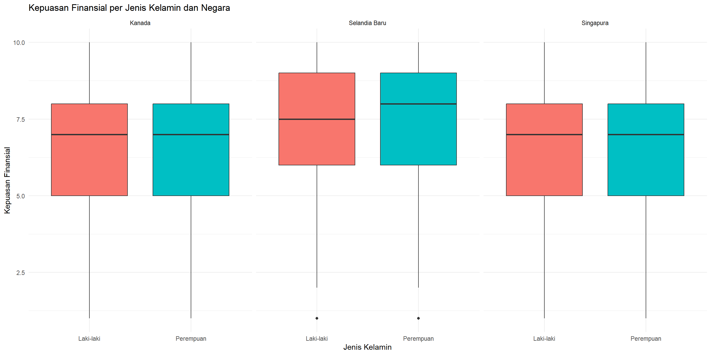
Ringkasan Sesi 1
Apa yang Sudah Kita Pelajari
- Dasar R: objek, tipe data, vektor, faktor, dataframe
- Tidyverse:
select(),filter(),mutate(),case_when(),group_by(),summarize(),pivot_wider() - Visualisasi: histogram, boxplot, bar chart, pie chart, scatter plot, faceting, korelasi
Sesi Berikutnya
Sesi 2: Analisis Regresi
- Regresi linear sederhana dan berganda
- Diagnostik dan asumsi
- Variabel kategorikal dan interaksi
Akhir Sesi 1!
Terima kasih! Sampai jumpa di sesi berikutnya.
ISEI Workshop: Analisis Regresi & SEM dengan RStudio